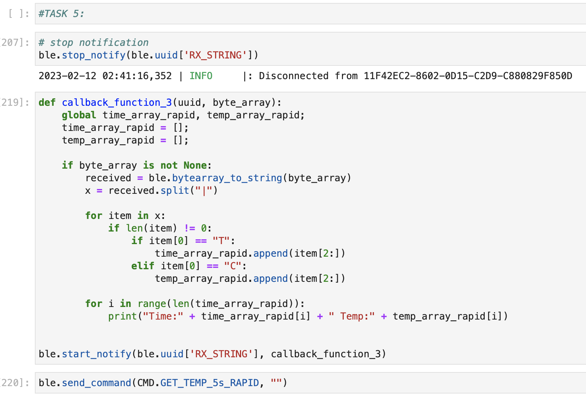
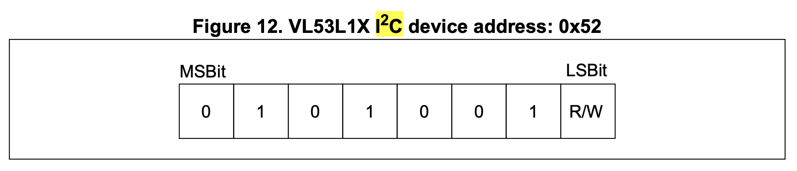
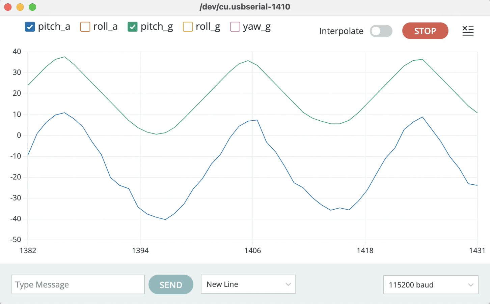

Labs


Canwen Zhang | Spring 2023
Hi! I'm Canwen, an ECE undergrad minor in CS at Cornell. My academic interests lies in robotics and embeded systems.
This webpage is used to document labs in ECE 4160: Fast Robots (Spring 2023). Below you can find links to each of the labs.
The purpose of this lab is to familiarize us with the Arduino IDE and the Artemis board. Specifically, we will run four example code scripts on the SparkFun RedBoard Artemis Nano board.
In this example we blink the LED on the board by calling the digitalWrite function and set LED_BUILTIN to HIGH or LOW. To double check, I added two println statements that showed the current state of LED on the serial monitor. See the video below.
In this example we tested the serial communication between the board and the computer. The Apollo3 contains two UART peripherals that can be used with the Arduino Serial api. One thing to note is that we need to match the baud rate we set in code with the baud rate appears on the bottom right of the serial monitor. Otheriwse, the output will not be what you would expected.
The Apollo3 has some internal ADC channels that allow us to measure:
- differential pairs
- the internal die temperature
- the internal VCC voltage
- the internal VSS voltage
In this example we could see the usage of analogRead by fading the built-in LED to match the voltage read in on one of the analog pins. Additionally some of the internal ADC connections are used to measure the die temperature and VCC levels.
In the video below, I heated up the chip by putting it in contact with a hot water plastic bag, and we can see data in the "temp (counts)" column (represents raw ADC counts from die temperature sensor) gradually increased.
The last example demonstrates how to use the pulse density microphone (PDM) on Artemis boards. The serial monitor prints out the loudest frequency heard by the microphone on the board. As I whistled from high frequency to low frequency, the data displayed also decreased, as shown in the video below.
The purpose of this lab is to establish communication between pc and the Artemis board through the Bluetooth stack. We will be using Python inside a Jupyter notebook on the computer end and the Arduino programming language on the Artemis side. We will also establish a framework for sending data via Bluetooth that will be useful in future labs.
Before starting to work on any lab tasks, I first installed Python 3 and pip as well as created a virtual environment for my lab2 folder. Then, to activate the virtual environment, I “cd” to the folder and used the command:
source FastRobots_ble/bin/activate
Now my CLI prompt should have the prefix (FastRobots_ble).
For the python code, We will be using Jupyter notebooks, which can be opened by this command:
jupyter lab
The codebase consists of two subfolders: ble_arduino and ble_python. The former one includes ble_arduino.ino (which will run on the Artemis board) and necessary class definitions. The latter one includes demo.ipynb (which is the main Jupyter Notebook to run commands and setup the bluetooth connection between pc and the Artemis board) and functions that handle BLE operations. Below is a video running the default cells in demo.ipynb.
Before doing any tasks, we need first made the necessary configurations to establish a stable connection between the BLE device and our PC. I updated the connections.yaml with the displayed MAC address from running ble_arduino.ino.
Then I changed the default BLEService UUID with the newly generated UUID in both ble_arduino.ino and connection.yaml to avoid connecting to my classmates’ Artemis boards.

An Echo command returns the augmented version of the message that was sent to it. In ble_arduino.ino, we add a new case ECHO similar to the given PING case. Note that when adding a new switch case, we need to update enum CommandTypes in ble_arduino.ino and cmd_types.py in Jupyter Notebook.
In Jupyter notebook, we send command:
In Arduino’s Serial Monitor the result will be:
This task is similar to the previous one, except that now instead of passing the string value from the pc, the millis() was used to get the current time in milliseconds
Add the switch case:
In Jupyter notebook, we send command:
In Arduino’s Serial Monitor the result will be:
In Jupyter Notebook, ble.start_notify(ble.uuid['RX_STRING'], callback_function) will automatically fill the two inputs (uuid and byte_array) of the callback_function. So in callback_function we only need to convert the raw value of byte_array to string in order for printing. After calling ble.send_command(), the notification handler will keep running to receive any corresponding data from bluetooth. The difference between this task and task 2 is that we no longer need to call ble.receive_string() to manually receive data; instead, the notification handler will do this for us.
This command sends an array of five timestamped internal die temperature readings using a string array and taken once per second for five seconds. Using similar basic structure as task 1 and 2, we need to add a loop for collecting one set of data per second.
In Jupyter Notebook, I wrote a callback_function to collect and rearrange the data into two arrays, time_array and temp_array, respectively.
Similar to the previous task, we need to collect and send time and temperature data. The only difference is that we need to process more sets of data over the same 5 second interval while not exceeding the characteristic size limit of 151. To do this, I created a variable start_time to keep track of the elapsed time and while the elapsed time is smaller than 5 seconds, we keep collecting and sending data five per set to avoid going beyond MAX_MSG_SIZE.
In Jupyter Notebook, I wrote a callback_function to collect and rearrange the data for printing.
To address the problem with memory limitation and latency, the robot needs to handle all real-time processing on-board, and communicate results in chunks with computer.
The Artemis board has 384 kB of RAM, which is 384000 Bytes of memory. If all of these memory are available for use, and we are sending 5 seconds of 16-bit(= 2 Bytes) data taken at 150 Hz, then we can store 384000/(5*2*150) = 256 groups of such data before running out of memory.
To be continued...
The purpose of this lab is to equip the robot with sensors by connecting the Artemis board to two VL53L1X Time-of-Flight Distance Sensors. We would do soldering stuff, run example codes, test sensor’s accuracy, and write code for two sensors working simultaneously.
The default I2C address of the ToF sensors, as included in its datasheet, is 0x52.
To use two ToF sensors concurrently, we have to solve the address conflict by either changing the address programmatically (while powered) or enabling the two sensors separately through their shutdown pins. I decided to use the former approach since it allows us to communicate with both ToF sensors simultaneously without having to shut down either one of the sensors, which could reduce delays for collecting sensor data.
To detect distance in multiple views, I decided to place one ToF sensor at the front of my robot and the other one on the right of robot. However, in cases where an obstacle appears to the left or to the back, we would not be able to detect it.
By convention, the red wire was soldered to Vin, the black wire was soldered to GND, the blue wire was soldered to SDA, and the yellow wire was soldered to SCL. I also soldered XSHUT pin of sensor1 to the output pin GPIO_02 and XSHUT pin of sensor2 to the output pin GPIO_03 for later use.
Below is the picture of ToF sensors connected to the QWIIC breakout board and the Artemis board:


To get familiar with the I2C library, we run the example code in File->Examples->Apollo3->Wire and open Example1_wire_I2C. We found that the output address was 0x29.
However, the default address shown on data sheet is 0x52. This is because the address is a bit shifted and the LSB is for the read/write status. In other words, since 0x52 = 0x29 << 1, so the addresses match.
The ToF sensor has three modes:
The long distance mode allows the longest possible ranging distance of 360cm to be reached. However, this distance can be impacted by ambient light. The short distance more is more immune to ambient light, but its max distance is only 136cm. For my robot, I plan to use the short distance mode with the command:
.setDistanceModeShort(); //1.3m
To test my chosen mode, I used example code in “..\Arduino\libraries\SparkFun_VL53L1X_4m_Laser_Distance_Sensor\examples\Example1_ReadDistance” and plotted the actual distance vs. measured distance graph below using the average of repeatedly collected data.
We can see the ToF sensor is pretty accurate within its mode distance range when the lighting condition is good. I also printed time (in milliseconds) it takes for the sensor to get data with or without stopRanging.
As mentioned earlier, to use two ToF sensors simultaneously, I
plan to resolve the sensor address conflict by changing the address of one
sensor programmatically while powered. To be specific, I first shutdown
sensor 2 to change I2C address of sensor 1 to 0x50, and then turn sensor 2
back on.
pinMode(2, OUTPUT);
digitalWrite(2, HIGH);
pinMode(3, OUTPUT);
digitalWrite(3, LOW);
distanceSensor1.setI2CAddress(0x50);
digitalWrite(3, HIGH);
Below is the video showing two sensors work concurrently.
To see the delays of collecting sensor data, I slightly modified
the code in task 7 by adding the while loop below:
while (!distanceSensor1.checkForDataReady() || !distanceSensor2.checkForDataReady())
{
int time = millis();
Serial.print("Time: ");
Serial.print(time);
Serial.println();
}
From the printed output, we could observe that the delays between two sets of sensor data is approximately 100ms. The the limiting time factor is the time it takes for the ToF sensors to gather and process data rather than the Artemis board’s internal clock cycle.
To record time-stamped ToF data for a set period of time and then send it over Bluetooth to pc, I added GET_ToF_5s_RAPID case in my lab2 Arduino code and wrote a corresponding callback function in Jupyter Notebook. The below graph shows distance data gathered over approximately 5 seconds from both sensors.
The purpose of this lab is to add the 9-DoF IMU (which is equipped with accelerometer and gyroscope that can measure pitch and roll angles when the robot is running) to my robot, start running the Artemis and sensors from a battery, and record a stunt on your RC robot.
First, we connected the IMU to the Artemis board using the QWIIC cable, as shown below.

We then could run the IMU example code to get data from the accelerometer and the gyroscope, as shown in the video below.
The accelerometer data changes when I accelerated the IMU back and forth or up and down, and the gyroscope data changes when I tilt the IMU in different directions.
Note that in the example code, the AD0_VAL PIN is defined to be 1 by default. It should be the value of the last bit of the I2C address.
#define AD0_VAL 1
According to the screenshot above, running the Wire_I2C code gave us the I2C address of 0x69, the LSB is 1, so the AD0_VAL should be set to 1.
I also added a function to blink the LED three times slowly on start-up as a visual indication that the board is running, as shown below.
I used the equations from class to convert accelerometer data into pitch and roll.
After playing with the accelerometer for a while, I found that it is pretty accurate with little deviation of < 2 degrees. The following chart shows the average roll and pitch data at {-90, 0, 90} degrees.
To see the noise level of accelerometer data, I collected 150 sets of pitch and roll data in 5 seconds by sending data over bluetooth to my pc, and then analyzed the noise in frequency spectrum through the Fourier Transform using python. Below are the graph for time domain and frequency domain data. In both frequency domain plots, there’s no big spike and amplitudes are under 0.1, meaning only little noise exists. This is mainly because the chip's built-in low pass filter is activated by default according to the page12 of the IMU datasheet. Therefore, a low pass filter is not needed for the accelerometer.
To compute pitch, roll, and yaw data using the gyroscope, I used the function below, where I changed the sign of roll to match its sign with the accelerometer’s roll data.

Here’s a video comparing the data generated by accelerometer and gyroscope.
According to the video, outputs from gyroscope are less noisy but have the issue of drifting, meaning that small errors could accumulate over time. As a result, after a significant amount of time, the readings would no longer be accurate as they drifted away from the actual values
I also adjusted my delay time from 100 ms to 10 ms to see the effect of increasing sampling frequency. It appears that increasing the sampling frequency (decrease delay time) improves the accuracy of my estimated angles and slightly reduces the drift effect.
To get both the low noise feature from gyroscope and no drift feature from accelerometer data, I implemented a complimentary filter using the equation below:
I got stable and accurate estimate angle of pitch and roll with range of +/- 180 degrees. The results can be seen in the video below.
In order to gather IMU data as fast as we can, I removed delays and print statememt in my code and sent the data whenever ready. I could collect 805 sets of time-stamped IMU data and sent over bluetooth in 5 seconds. In other words, I was able to sample new values approximately every 6 milliseconds, so 161 times per second.
To enable the Artemis to capture both ToF data and IMU data, I integrated my code from lab3. In the while loop of the Arduino code, I first start ToF ranging, then check if the IMU data is ready, and then check if the ToF data is ready. If either one is ready, I’ll append them into estring. After three sets of data are collected and appended to estring, they’ll be sent over bluetooth. In this way even the ToF data rate is much slower than the IMU data rate, they will not hinder each other.
According to the video below, I could collect 585 sets of IMU data and 49 sets of ToF data sent over bluetooth in 5 seconds.
Now it’s time to use batteries! We have two batteries available. One is 3.7V 850mAh that will be used to power the motors through the motor drivers. The other is 3.7V 650mAh that will be used to power the digital electronics (Artemis, sensors, etc.). We used the one with more capacity to power the car since it consumes more energy.

After mounting the 850 mAh battery onto the RC car, I played around with the car and was amazed by its fast movement. I then taped all the components(the Artemis with battery and sensors) to the car and tried to record a stunt.

Below are two videos and their graphs platted using collected data.
To be continued...
To be continued...